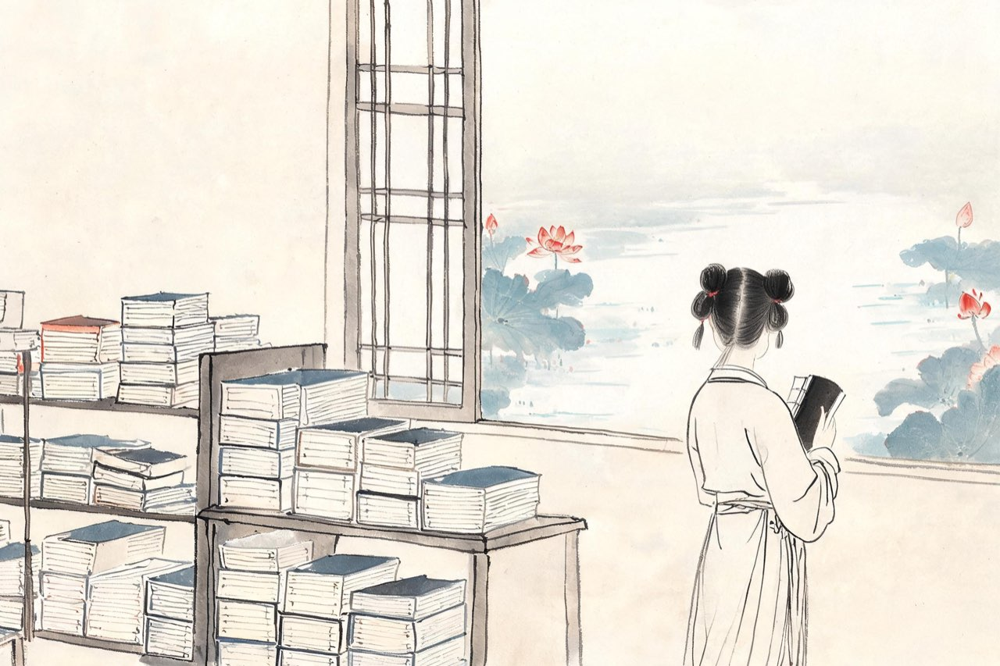

李清照 · 1084-1100
明水
藕花深处

生于明水
元丰七年，你生在齐州章丘的明水镇。
父亲李格非，进士出身，写一手好文章，后来名列「苏门后四学士」——进出你这个家门的人，是天下最会写文章的一群。
母亲王氏，也读书，也作文。在这个家里，女孩和书之间没有门槛。你识字早，读得快，读到会心处，一个人笑出声来，没有人觉得奇怪。
明水多泉，水汽终年不散。镇外有湖，湖里夏天开满藕花。你的少女时代，一半在书堆里，一半在水边——那时你不知道，这两样东西，将是你一生全部的行李。
注
- 生年元丰七年（1084）从年谱通说；籍贯有章丘明水、历城两说，此从章丘说
- 母王氏善文，见《宋史·李格非传》；外祖家世另有异说，不取
那是一个再普通不过的夏日傍晚。溪亭，日头西沉，一船人喝醉了酒，谁也记不清回去的水路。船误入藕花深处，桨声、笑声，惊起满滩鸥鹭。那年你十几岁，酒是甜的，天是红的，找不到回家的路，也不要紧——
如梦令·常记溪亭日暮
常记溪亭日暮，沉醉不知归路。
兴尽晚回舟，误入藕花深处。
争渡，争渡，惊起一滩鸥鹭。
兴尽晚回舟，误入藕花深处
注
- 「常记」一作「尝记」；「争渡」一作「怎渡」——异文并录
- 词为追忆口吻，所忆为少女时期旧游；溪亭地望有明水、历下诸说，均在济南境内
后来你随父亲进了汴京，词名跟着你进了城。某个宿醉的清晨，你问卷帘的侍女：海棠怎么样了。她说：海棠依旧。你说不，你写下这三十三个字——城里传抄开来，「绿肥红瘦」人人称赏。也是在那几年，前辈张耒咏浯溪中兴碑，你一个少女提笔和了两首，直论安史之乱的教训，「夏商有鉴当深戒，简策汗青今具在」。词笔轻，诗笔重，两样都在你手里——
如梦令·昨夜雨疏风骤
昨夜雨疏风骤，浓睡不消残酒。
试问卷帘人，却道海棠依旧。
知否，知否？应是绿肥红瘦。
知否，知否？应是绿肥红瘦
注
- 「绿肥红瘦」：绿叶繁、红花稀——以肥瘦说叶花，前人未用的语汇
- 宋人朱弁《风月堂诗话》记晁补之多对士大夫称许易安之诗；后人「莫不击节称赏」云云为夸饰，不取
- 《浯溪中兴颂诗和张文潜》二首系年有婚前、婚后二说，今从早年说